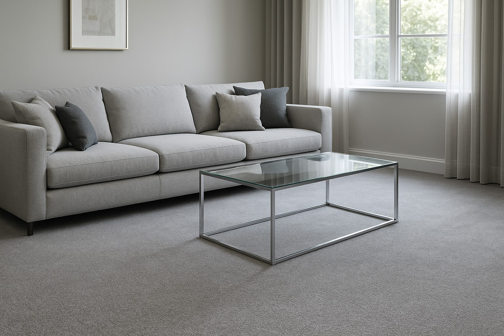

Perché scegliere Very Clean
Con il tempo, divani e materassi assorbono polvere, batteri, acari e odori. Noi li rigeneriamo con un trattamento professionale a domicilio: tessuti più freschi, igiene profonda e un comfort che si vede e si sente.

Divani & Poltrone
Macchie via, colori che tornano vivi
Trattiamo i tessuti con prodotti mirati e azione combinata per rimuovere sporco profondo, aloni e cattivi odori.

Materassi
Igiene che migliora il riposo
Eliminiamo acari e allergeni, riduciamo gli odori e restituiamo al materasso una sensazione di pulito duratura.

Tappeti & Moquette
Fibre pulite, colori più brillanti
Trattamenti dedicati per tessuti delicati e ad alto calpestio: smacchiatura, deodorazione e cura delle fibre.